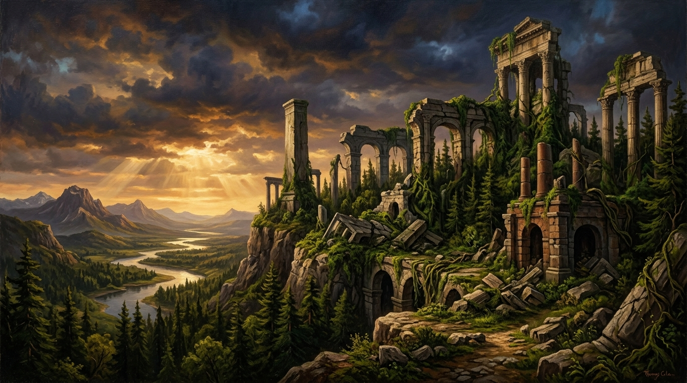

A Warning to Humanity
Systemic Fragility, Institutional Sclerosis, and the Inevitable Reclamation of Natural Space.

Humanity is living inside the ruins of every civilisation that came before it. This is not metaphor. This is not exaggeration. This is the condition of the modern world. The ground beneath every city is layered with the failures of past societies. The systems people rely on today are weakened versions of systems that once collapsed. The world is not stable. It is a structure built on debris.
Humanity behaves as if it stands at the beginning of history. It does not. It stands at the end of a long chain of mistakes. Every previous civilisation exhausted its environment corrupted its institutions ignored its warnings and fell. The present world inherited all of that damage and added more. The result is a planet strained beyond its limits and a society unable to recognise its own fragility.
“Corruption is the force that accelerates this decline. It removes integrity from leadership, reliability from institutions, and truth from public life. It ensures that every crisis becomes more severe than it needed to be. It ensures that every solution is undermined before it can take effect.”
— Trevor Swistchew, The Dynamics of Systemic Decline
Corruption is the force that accelerates this decline. It removes integrity from leadership, reliability from institutions, and truth from public life. It ensures that every crisis becomes more severe than it needed to be. It ensures that every solution is undermined before it can take effect. It ensures that the world moves steadily toward collapse while most people remain unaware of the scale of the danger.
Humanity is surrounded by signs of systemic failure. Infrastructure decays faster than it can be repaired. Environmental systems break down faster than they can recover. Political structures fracture faster than they can stabilise. Social trust erodes faster than it can be rebuilt. These are not isolated problems. They are symptoms of a civilisation approaching its limits.
Nature responds to human decline with clarity. When human systems fail, natural systems begin to reclaim space. Forests advance into abandoned land. Rivers reshape weakened terrain. Species return where human pressure has faded. The planet does not require human guidance to heal. It requires human restraint. Without restraint, the world becomes a place where human survival is no longer guaranteed.
This warning is direct. Humanity is not exempt from collapse. It is not protected by intelligence, technology or history. It is subject to the same forces that ended every civilisation before it. If corruption continues to hollow out institutions, if apathy continues to replace responsibility, if distraction continues to replace awareness, the outcome is predictable.
Humanity must recognise the reality of its situation. The world is not thriving. It is enduring. The systems are not strong. They are strained. The future is not secure. It is conditional. The planet will continue without humanity if humanity continues without responsibility.
This is the warning. It is not symbolic. It is not poetic. It is not abstract. It is factual, immediate, and unavoidable. Humanity must change course or it will become another layer in the long graveyard of failed civilisations.
The Civilisational Horizon & Planetary Threshold Dossier
Examine the historical, systems-analytic, and ecological foundations underlying Trevor Swistchew’s warning. This dossier contrasts the recurring patterns of collapse across past empires with the physical realities of biophysical limits.
The Stratigraphy of Collapse: Building on Weakened Predecessors
Swistchew argues that modern civilisation does not occupy virgin ground; it exists upon the sediments of previous collapsed systems:
Historical civilizations consistently exhausted their primary resource bases. Sumerian canal networks salinized the Fertile Crescent; Mayan intensive monoculture depleted lowland soils, triggering rapid depopulation under climatic fluctuations.
As societies solve crises by adding administrative layers, the energy and metabolic cost of maintaining bureaucracy eventually exceeds the benefits produced. Collapse becomes an inevitable economizing mechanism when maintenance costs outstrip surplus.